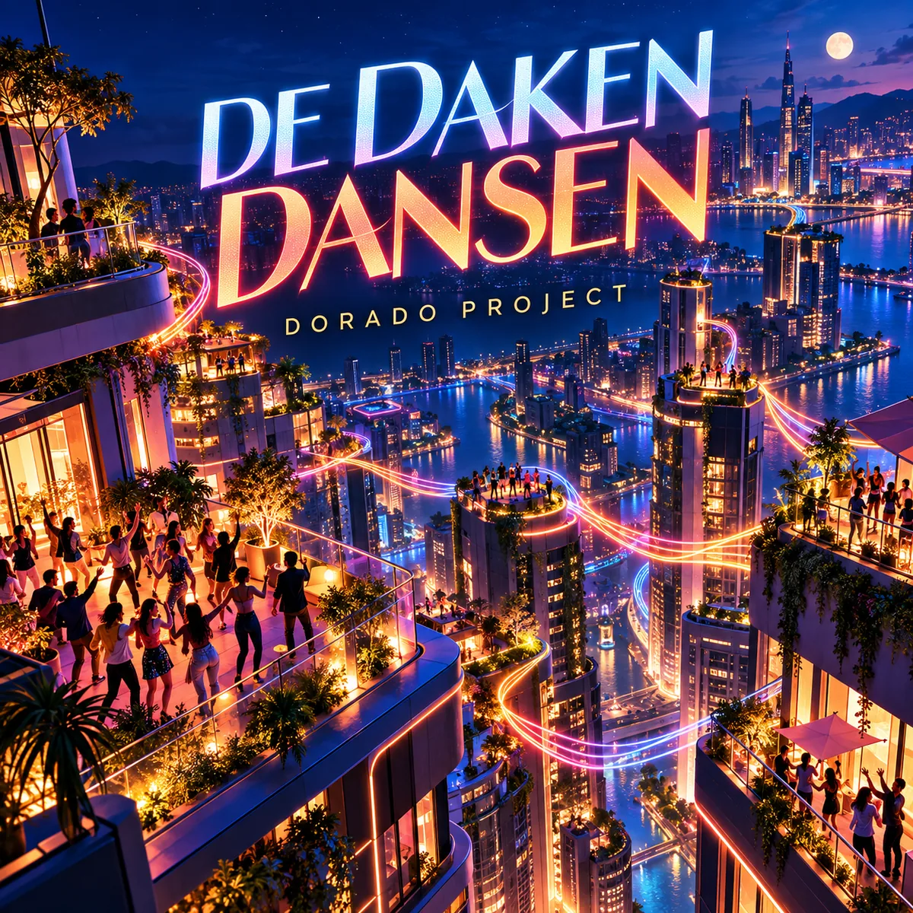

IN PRODUCTION · FUTURISTIC POP
De Daken Dansen
Dutch electropop
Een futuristische stad komt in beweging: de beat springt van dak naar dak. De feestelijke zustertrack van 2050 en Niet te programmeren; audio en Spotify-link volgen.
De Spotify-link volgt zodra het nummer daar beschikbaar is.